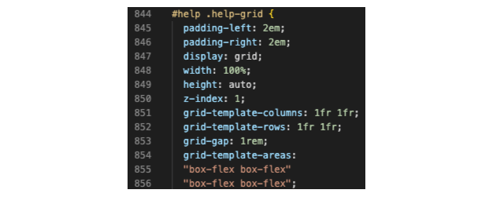
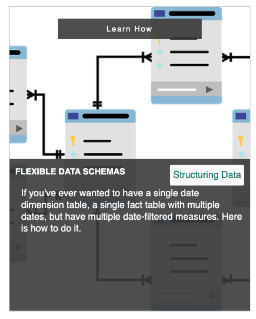
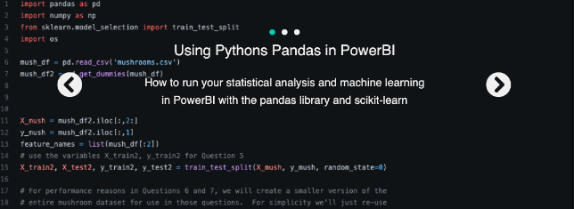

PowerBI Community Website - PB Dev
Author: Tim Scongack
Learning a new technology can be difficult. As a new application, programming language, or framework is learned, one collects concepts and how these concepts work together, which can be confusing. Learning the notional structure and where those concepts attach themselves becomes clear. But what if one could approach learning about a particular subject with the notional aspects/scaffolding outlined intuitively? What if you had a network of other enthusiasts you could submit questions to and interact with? PB Dev is a community site that outlines these fundamental concepts for Microsoft's PowerBI Application. The site has the following objectives:
- Outline PowerBI intuitively.
- Share News and Articles about PowerBI
- Connect those with unique questions to our community mailing group and to offer companies and individuals support
- Provide learning resources for those wanting to learn how to use PowerBI.
The site structure is comprised of:
- The Home Page - This contains a banner describing what the community does, followed by two sections linking to learning how PowerBI works and our contact us section.
- Learn Page - Step-by-Step walkthrough of notionally how PowerBI works as an application.
- Article Page - This contains the content summary of critical PowerBI articles and news for the user to access.
- The Community Services Page (links to selected contact form options) allows users to choose what they need help with based on the offered services.
- The Contact Page - Contains a basic contact form to reach out - PB Dev manages the routing of questions to the community.
Inspiration
The inspiration concept for this website came from RADACAD, Curbal, and SQLBI. One goal of the site is to provide a scaffolding that outlines the basics of PowerBI for new users, provide them with self-help and resources, and allow them to connect with experts to guide/mentor or directly support them. However, despite the quality of content that inspired this site - which is much beyond this site - it was always confusing to know where to start. Also, asking questions on the Microsoft forum and getting comprehensive help can be challenging.
As for the design of this website - many elements were inspired by Bonza.se - a Swedish Design Studio that provides various design services. Looking through the portfolio of projects, their website design is clean, simple, and colorful.
Adobe’s website and the UI of their Creative Suite were also inspiring - the site uses Adobe font families. When looking at the Creative Suite UI, it was noticed minimal coloring was used. It was clear that this site could have a simple-looking and atheistically pleasing design by having several black, white, and greyscale elements while incorporating a few select bright colors.
Accessibility
The site is designed to be readable with a screenreader. This means that tags in the HTML are appropriate for their purpose, including the language tag on the site, so the reader knows what language to read it in. The site also uses ARIA roles to help the user navigate, and uses alt text to describe the elements explicitly.
Next, the site allows users to toggle underlined links and toggle for a high contrast back-white color scheme. This is done using Javascript to reference different sets of default color variables. Overall, the site uses high-contrast colors, so depending on the user’s level of color blindness, the toggle contrast may not have to be used.
Finally, the site can be navigated with relative ease using a keyboard, including the contact-us forms on the website. All of this is possible while having modular HTML injected on the server-side.
When the user accesses the website, we want to make the priorities of the site clear: (1) Why this community exists and how it can help the user, (2) How to understand PowerBI Notionally, (3) How they can reach out with questions, and (4) What resources can they use to learn more about PowerBI. This is done by stating the purpose of the community in a looped video banner, then linking to the pages in accordingly.
As with many sites, the header or primary navigation bar is the direct way for users to move across the site. This nav bar includes links to the primary pages, accessibility buttons, and a progress bar, so the user knows their relative location to the bottom of the page. The order of the pages is in the order of the priorities and purpose of the website. Regardless of where the user is on the website, almost every other aspect of the website is accessible.
Finally, once users have found the resources they want or wish to receive help immediately, the site is structured so they can request assistance directly via the contact form. Alternatively, they can go to the community services page - select a service, and the contact form will be partially filled out based on the service request they have. Essential to usability is explicitly outlining the purposes of the site, what it does for the user, and setting expectations on the delivery of those expectations.
Learning
Many aspects of HTML, CSS, and Javascript had to be learned or re-learned in the development of this website outlined in the course and previously attempted tutorials. Outside of review of the course material and Google searches, the following are three (non-exhaustive) examples of required learning to create this site:
Using Javascript to Inject Re-usable HTML Elements
The goal of using this was to avoid the copying and pasting of code for my header and footer. I initially found this article on freecodecamp on how to use HTML templates by injecting a string of text - which contained the desired HTML - into the referenced HTML elements.
This method worked well and achieved the desired result with one problem - anytime I had to update the header/footer, I would have to modify an unformatted string in the .js files, and I also needed .js files for each element I wished to inject. What I wanted to be able to do is have separate HTML files and then reference those files to put them into other HTML files. This stack overflow article pointed me to a w3 library that did this. Originally I sourced the library file and updated the HTML. Later in the project, I simply took the function out of the w3 library and added it to my helper.js file - as it was unnecessary to have the whole library for a single component.
Learning CSS Grid to Create Grid and Grids within Grids
The use of CSS Grids - predominantly in the article section - was learned from CSS-Tricks Tutorial and Kevin Powell’s tutorial. These tutorials aided immensely in the site’s creation.
The grid design pattern where I specified row and column sizes sequentially and then outlined the template areas seemed intuitive for such a powerful feature. I was nesting these elements required the nested HTML class or id to be referenced appropriately.
Javascript: Contact Forms, Referencing/Modifying the DOM, Events, and Control Flow
The Contact form on the website was challenging because it was essential to link the contact form from other pages, handle errors, and dynamically update and submit the form. I worked through the and the w3school tutorial (amoung other sources) on making contact forms to implement. From there, I applied the CSS concepts learned in this course to land on the final design of the form.
Once the form was complete, I researched how to link the Community Services Page with the form - once I got the links to manipulate the form values
Evaluation: Successful Aspects
There are a few aspects that I would personally regard as successful in terms of beginner-level web development:
- The design and look Though it is not on the level of a professional site - the final design of the site exceeded my initial expectations.
Following Kevin Powell's advice on designing the site in black and white and adding a little color was the central concept I used for visual design, aside from looking at Bonza.se for design queues. Another component of the design was removing elements.
Take this example of an initial card I had:
Then the final:
The final card is much cleaner, arguably more visually appealing, and would have been much easier to implement in the first place. This is because the original card had too many elements - and they weren’t serving a purpose. For example, the topic textbox component had marginal returns to the user and took time to determine how to make it responsive. Sometimes the removal of unnecessary elements aids in the overall design and functionality.
- The site navbar addressed the user's need for immediate access to the components of the website they like when landing the site while giving the user information on where they are on a particular page, while also giving them access to the color contrast and link underlying accessibility feature. Along with mobile responsiveness and incorporating the logo to the accessibility menu, this element is not duplicated over each page but instead is inserted by accessing and manipulating the DOM directly.
- The website is easily navigated but the user can bypass steps they don’t want. This easy navigation contributes to the site's relative success. The user can access what they like using the navbar, but if they aren’t sure, they can read the homepage. Each page references the next logical step in the process and works to get them to the next targeted goal:
- Landing on Homepage > Navbar for all OR > Homepage if the user is unsure
- Learning Describes PowerBI on a high level > links to the article as a next step
- Services > Contact Form, based on the specific services that they wanted to look at, the form is pre-filled, and details are collected based on the selection.
Evaluation: Future Improvements/Lessons Learned
The development process could have been improved by creating smaller development tasks would have made creation more enjoyable and allowed for more granular time-boxing. To add, ensuring each element is cleaned and commented on when the building would have saved an immense amount of time re-learning implemented items and commenting on them.
The CSS structure of the site is not optimized or organized in an ideal fashion and was cleaned towards the end of the project; actioning on the go would have been optimal.
The overall number of CSS elements is higher than necessary to produce the desired visual elements - having more ‘parent’ classes would result in less CSS code. Also, CSS is inconsistently referenced; bring referenced by class and ID. When converting to ID, there was unexpected behavior, and tutorials used different conventions to create the pages.
When inspecting CSS elements, many are present in the code that can simply be removed or refactored. Also, using a framework like Bootstrap could have made this component more orderly and consistent.
To conclude, having more modularized CSS, smaller development tasks, and use of modern libraries and templating tools would have produce a much richer content experience for a smaller investment of time.
References
“A Complete Guide to Grid | CSS-Tricks - CSS-Tricks.” CSS-Tricks, 12 May 2021, https://css-tricks.com/snippets/css/complete-guide-grid/.
Bressler, Kristina. “Html - How to Make the Radio Buttons with Tabs Work in Pure Css? - Stack Overflow.” Stack Overflow, https://stackoverflow.com/questions/52956963/how-to-make-the-radio-buttons-with-tabs-work-in-pure-css
Coding. Responsive Cards UI Design in HTML and CSS | CSS3 Cards. YouTube, 3 Dec. 2020, https://www.youtube.com/watch?v=YBokwsAjKvA.
Curbal. Do You Want to Level up Your Power BI Game? YouTube, 28 Aug. 2018, https://www.youtube.com/watch?v=ROqF_m9NP9E.
“Home - Bonza.” Bonza, 21 Oct. 2019, https://bonza.se/.
“Home - SQLBI.” SQLBI, https://www.sqlbi.com/.
Kim, Allen. “How To Build Tabs Only with CSS. There Are Several Ways to Provide… | by Allen Kim | Digital-Heart | Medium.” Medium, Digital-Heart, 15 Mar. 2019, https://medium.com/allenhwkim/how-to-build-tabs-only-with-css-844718d7de2f.
Koishigawa, Kris. “Reusable HTML Components – How to Reuse a Header and Footer on a Website.” FreeCodeCamp.Org, freeCodeCamp.org, 2 Oct. 2020, https://www.freecodecamp.org/news/reusable-html-components-how-to-reuse-a-header-and-footer-on-a-website/.
Market, Coding. Responsive Cards UI Design in HTML and CSS | CSS3 Cards. YouTube, 3 Dec. 2020, https://www.youtube.com/watch?v=YBokwsAjKvA.
Powell, Kevin. “Kevin Powell - YouTube.” YouTube, https://www.youtube.com/kepowob.
Learn CSS Grid the Easy Way. YouTube, 25 Nov. 2021, https://www.youtube.com/watch?v=rg7Fvvl3taU.
“Power BI Paginated Report - Perfect for Printing - RADACAD.” RADACAD, https://www.facebook.com/RADACAD/, 18 Aug. 2022, https://radacad.com/power-bi-paginated-report-perfect-for-printing.
Prasanth, R. “Javascript - Make Header and Footer Files to Be Included in Multiple Html Pages - Stack Overflow.” Stack Overflow, https://stackoverflow.com/questions/18712338/make-header-and-footer-files-to-be-included-in-multiple-html-pages.
RohitDegree in Computer Science and Engineer: App Developer and has multiple Programming languages experience. Enthusiasm for technology & like learning technical. “JavaScript Contact Form Validation in HTML: Example Code - Eyehunts.” Tutorial, 9 June 2021, https://tutorial.eyehunts.com/js/javascript-contact-form-validation-in-html-example-code/.
“W3Schools Free Online Web Tutorials.” W3Schools Online Web Tutorials, https://www.w3schools.com/.
“Codepen.io” CodePen, https://codepen.io/, https://codepen.io/masha_tatosh/pen/oNgoyoy
“Awesome Contact Form Using HTML & CSS & JavaScript.” YouTube, YouTube, 24 July 2020, https://www.youtube.com/watch?v=rpujWVkmiPE.
Images and Video References
Purple Dashboard: “Crypto Dashboard.” Xd File, 23 Mar. 2021, https://xdfile.com/stocks-crypto-candle-chart-xd-template/.
Excel Ribbon Image: “Extensorimo R5 Und Hausdata R4 Immobilien Software.” EXTENSO, https://www.extenso.ch/.
Homepage Video: TechnologyAdvice1. “Power Bi Demo.” YouTube, YouTube, 23 Mar. 2020, https://www.youtube.com/watch?v=cIMTtzLfuyo.
Python Code: My Github https://github.com/timscongack
Black and Green Dashboard: Lapajne, Andrej. “How to Create the Best KPI Dashboard to Make Smarter Decisions Faster.” Zebra BI, 21 Dec. 2021, https://zebrabi.com/create-the-best-kpi-dashboard/.
City Image: Igini, Martina. “Could the Bill Gates Smart City Lead the Way for Other Cities to Follow? | Earth.Org.” Earth.Org, https://www.facebook.com/hivelifemagazine, 9 Feb. 2022, https://earth.org/bill-gates-smart-city/.
Site/File Map, Wireframe, Final Mockup
The below is a large image of all the design work created using Figma, it may take several seconds to load.
Note: with the injectable HTML elements the site's HTML were validated and cleared the w3 HTML validator there is an unavoidable w3-include-html error due to the injectable elements, the individual assets html elements must be validated while incorporated into parent pages.**